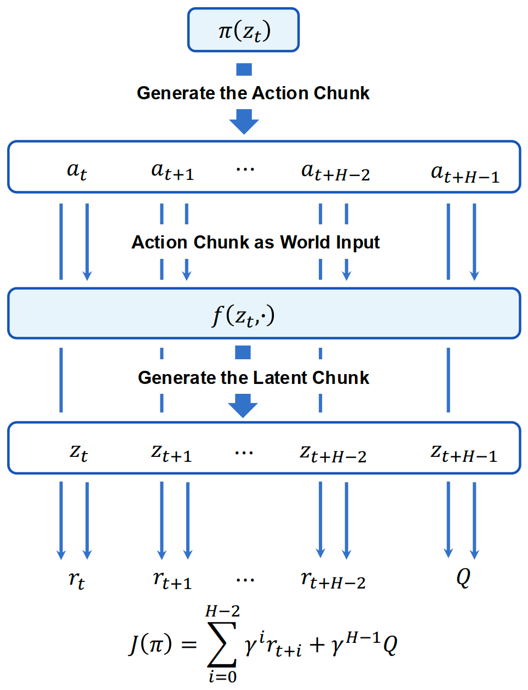
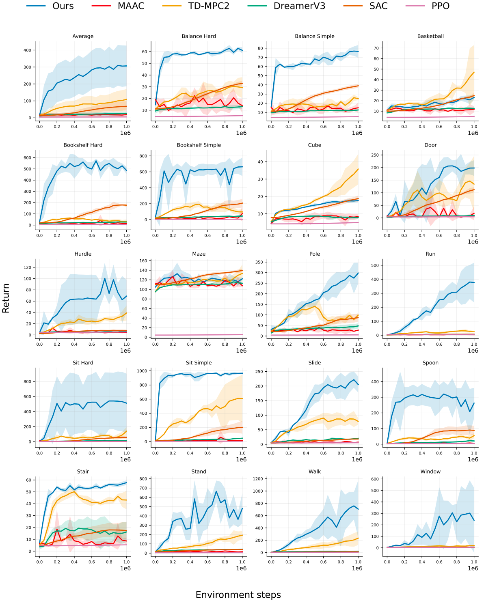
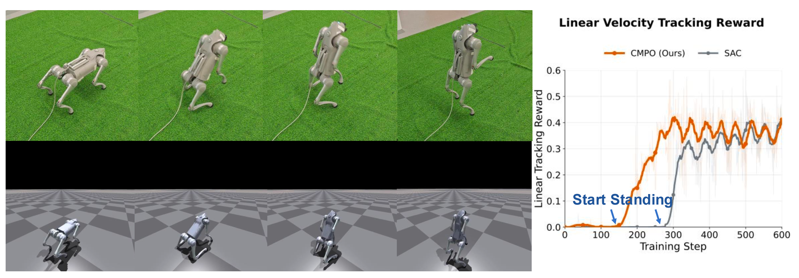
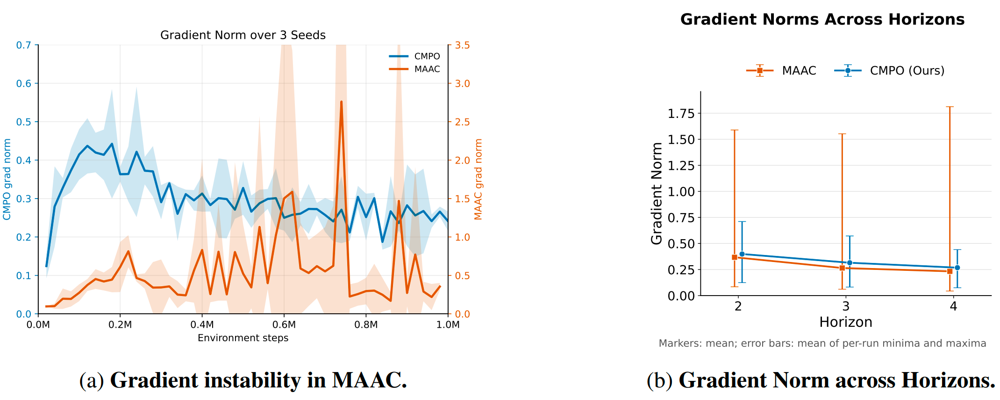

Predict an action chunk
Encode the current state, then generate H future actions with a single actor query.
at:t+H−1 = π(zt)
1 Zhejiang University2 Shanghai Innovation Institute3 Westlake University4 Shanghai Jiao Tong University
† Corresponding authors
From the recurrent-rollout bottleneck to collaborative chunk-wise modeling and real-robot deployment.
Model gradients for learning.
A direct policy for deployment.

Encode the current state, then generate H future actions with a single actor query.
The chunk world model maps the current latent state and the entire action sequence directly to future latent states.
Predicted rewards and a terminal critic form an (H−1)-step value expansion. Gradients pass through a single chunk prediction instead of a recurrent rollout.
Predict a chunk, execute its first action, and repeat from the next observation. No test-time planning is used in the main experiments.
19 whole-body control tasks.
61-dimensional action space.
CMPO achieves the strongest average performance among the evaluated baselines and outperforms them on the majority of selected HumanoidBench tasks. All main experiments use a chunk horizon of H = 3.

Single-call predictions reduce sequential training work. At inference, the actor directly outputs actions without iterative MPC optimization.
Table 1. Single NVIDIA RTX 4090; identical settings; no Torch Compile. Training time measured over 200k steps. Lower is better.
| Task / measurement | TD-MPC2 | CMPO |
|---|---|---|
| Walk Training / 200k steps | 3.57 h | 1.74 h |
| Run Training / 200k steps | 3.54 h | 1.72 h |
| Walk Inference / step | 40.8 ms | 1.4 ms |
| Run Inference / step | 39.5 ms | 1.3 ms |
Unitree Go2 quadruped.
Bipedal locomotion.

Trained in Isaac Gym and transferred to the physical Go2, the policy controls all 12 actuated joints through residual joint-position commands. CMPO discovers standing earlier and achieves higher tracking reward than SAC in the reported simulation experiment.
successful hardware trials for CMPO
versus 4/10 for SAC · Maintaining a bipedal posture for 20 seconds
Compared with recurrent MAAC updates, CMPO exhibits more stable gradient norms and smaller excursions as the tested horizon increases.
Keeping the chunk actor but reverting to a single-step world model substantially degrades performance in the reported ablation.
Chunking removes recurrent temporal depth, but direct long-horizon prediction remains difficult. Performance drops at H = 5 in the horizon study.

Chunk-wise Model-based Policy Optimization
Conference on Robot Learning, 2026
@inproceedings{
song2026chunkwise,
title={Chunk-wise Model-based Policy Optimization},
author={Weixi Song and Donglin Wang and Yong-Lu Li},
booktitle={10th Annual Conference on Robot Learning},
year={2026},
url={https://openreview.net/forum?id=dngZLI0SlV}
}